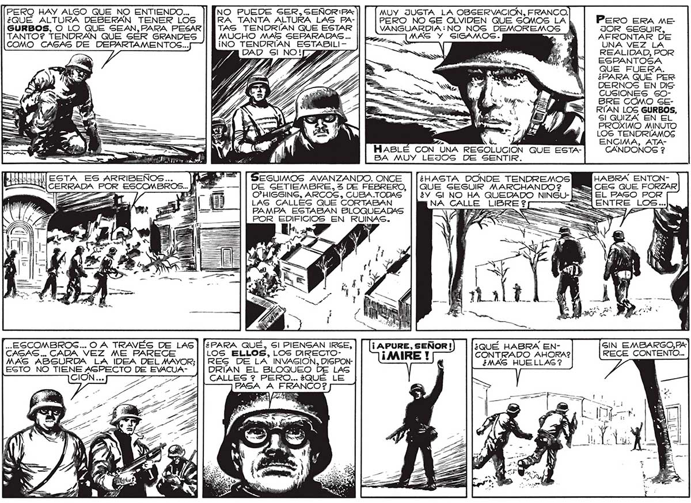

PERO HAY ALGO QUE NO ENTIENDO... ¿QUÉ ALTURA DEBERAN TENER LOS GURBOS, O LO QUE SEAN,PARA PESAR TANTO? TENDRÁN QUE SER GRANDES COMO CASAS DE DEPARTAMENTOS... ESTA ES ARRIBENOS.. SERRA, POR ESCOMBROS... -..ESCOMBROG... O A TRAVÉS DE LAS CAGAS... CADA VEZ ME PARECE MAG ABSURDA LA IDEA DEL MAYOR; EGTO NO TENE ASPECTO DE EVACUA| NO PUEDE SER, SEÑOR:P4 MUY JUGTA LA OBSERVACION, FRANCO. RA TANTA ALTURA LAS PA- PERO NO GE OLVIDEN QUE SOMOS LA TAS TENDRIAN QUE ESTAR VANGUARDIA: NO_NOGS DEMOREMOS MUCHO MAS SEPARADAS... || L MAS Y GIGAMOS. ¡NO TENDRÍAN ESTABILI- : y HABLÉ CON “UNA RESOLUCION QUE ESTABA MUY LEJOS DE SENTIR. EGUIMOS AVANZANDO. ONCE ¿HASTA DONDE TENDREMOS DE GETIEMBRE, 3 DE FEBRERO, | | QUE SEGUIR MARCHANDO 2 O”HIGGING, ARCOS» CUBA.TODAS ¿Y Gl NO HA QUEDADO NINSU- : LAS CALLES QUE CORTABAN NA CALLE LIBRE ? PAMPA ESTABAN BLOQUEADAS == POR EDIFICIOS EN RUINAS. ¿PARA QUÉ, Sl PIENSAN IRSE, ¡ APURE, SEÑOR! ¿QUÉ HABRA ENLOS ELLOS, LOS DIRECTO- ¡MIRE Y CONTRADO AHORA2 RES DE LA INVASION, DISPON- E ¿MAS HUELLAS ? DRÍAN EL BLOQUEO DE LAS CALLES ? PERO... ¿QUÉ LE PASA A E Pero ERA ME JOR SEGUIR, AFRONTAR DE UNA VEZ LA REALIDAD, POR ESPANTOSA QUE FUERA. ¿PARA QUE PER DERNOS EN DIG CUSIONES SOBRE CÓMO GERIÍAAN LOS GURBOS, SI QUIZA EN EL PROXIMO MINUTO LOS TENDRÍAMOS ENCIMA, ATACÁNDONOS ? HABRA ENTONEL PAGO POR ENTRE LOS ... 191
